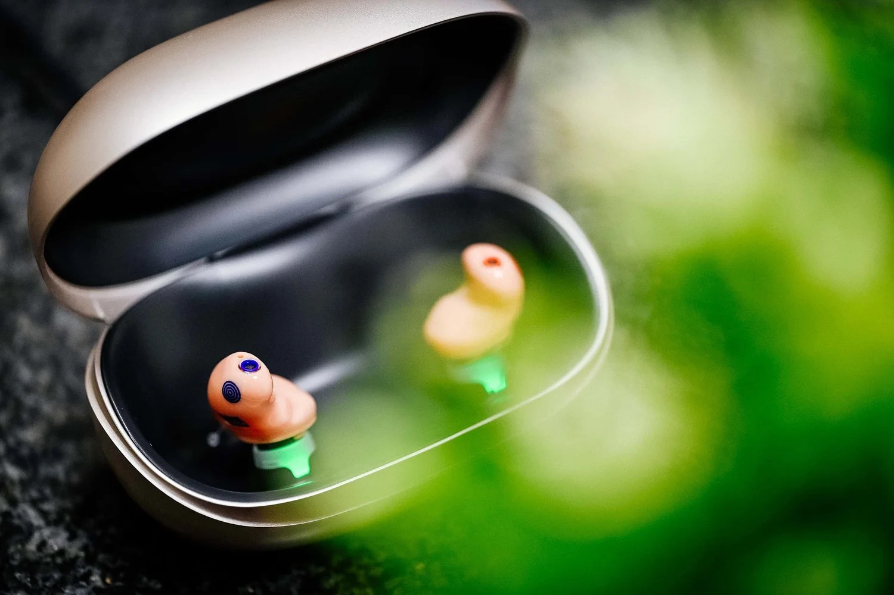

Unser Team
Ihr Team beim Eifelohr
Persönliche Beratung mit Erfahrung aus der Region — lernen Sie die Menschen kennen, die beim Eifelohr in Mayen für Ihr gutes Hören sorgen.
Was unsere Kunden sagen
Echte Google-Bewertungen — durchweg 5,0 Sterne.
„Der Besitzer Johannes Penzel ist ein sehr gut ausgebildeter Hörakustik-Meister und überaus freundlich zu seinen Kunden. Die Ohrabdrücke, die er uns machte, sind perfekt und das Endprodukt hat eine perfekte Passgenauigkeit. Wir kommen wieder."
„Hier fühlte ich mich sehr gut aufgehoben. Herr Penzel und seine Mitarbeiter sind sehr freundlich und zuvorkommend. Ich wurde fachlich sehr gut und kompetent beraten. Es wurde viel ausprobiert und erklärt. Meine neuen Hörgeräte sind top."
„Wir sind mit der Beratung von Herrn Penzel voll umfassend zufrieden. Gerne empfehlen wir dieses Haus weiter."
Daniel
Hörgeräteakustikermeister
Daniel ist das fachliche Herz des Eifelohr. Als geprüfter Hörgerätemeister aus Mayen bringt er über 20 Jahre Berufserfahrung in der Hörakustik mit. Diese Erfahrung bedeutet für Sie: fundierte Diagnosen, präzise Anpassungen und eine Beratung, die wirklich auf Ihre persönliche Hörsituation eingeht. Daniel kennt die Region und ihre Menschen – das spüren seine Kunden.
Ersin
Auszubildender
Ersin befindet sich seit 2024 in der Ausbildung zum Hörgeräteakustiker. Was ihn besonders macht: Er trägt selbst Hörgeräte und weiß daher aus eigener Erfahrung, wie sehr moderne Hörtechnologie das Leben verändern kann. Diese persönliche Perspektive macht ihn zu einem einfühlsamen Ansprechpartner – besonders für Kunden, die erstmals mit dem Thema Hörgerät konfrontiert sind.
Johannes
Inhaber & Geschäftsführer
Johannes Penzel leitet Eifelohr mit einer klaren Vision: Hörgeräte nicht als bloße Hilfsmittel zu verstehen, sondern als hochmoderne Technologie, die das Leben bereichert. Sein Fokus liegt auf besonders kleinen, nahezu unsichtbaren Hörgeräten, die sich nahtlos mit Smartphone und Fernseher verbinden lassen. Für Johannes steht transparente Beratung an erster Stelle – ohne Druck, ohne Kompromisse bei der Qualität.
„Transparente und umfassende Beratung, modernste Technologien und stets ein offenes Ohr für alle Ihre Fragen rund um das Thema Hören & Verstehen – das macht Eifelohr aus." Eifelohr – Der Akustiker
